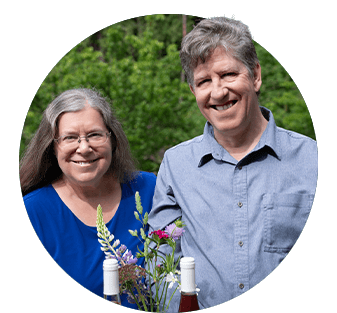

Experience shaped by patience, guided by place
Foragers did not begin as an idea. It began as a continuation of craft, of hospitality, and of a belief that what we make should reflect where we are.
Leading the way
Decades of experience, guided by a simple principle: quality begins at the source
Foragers was founded and is led by Danise Lofstrom and Jeff Barringer and is the sister project to their award-winning Bruinwood Estate Distillery, where thoughtful production, precision, and agricultural integration form the foundation of the distilling program.
With Foragers, that philosophy finds a new expression, one rooted in honey, orchard fruit, fermentation and fine dining.
In the kitchen and dining lounge, Chef Adam MacIsaac and Bartender Bryan Porter bring a depth of talent and experience to both the glass and table, shaping a dining experience that reflects the same hospitaility, care, and attention to source.
Together, the Foragers team bring decades of experience across international fine dining, craft alcohol production, and hospitality leadership. Their work is guided by a simple principle: quality begins at the source.

Founders Danise Lofstrom and Jeff Barringer
Building Something Enduring
Singular, intentional, and defined by its land
Our aim is not expansion for its own sake, nor replication across markets.
Foragers is designed to be singular, a place defined by its land and the people who steward it.
We work in small batches. We grow with intention.
We prioritize sustainability and team culture over speed.
Craft, for us, is not a marketing term. It is daily discipline.
Rooted in craft. Guided by place. Shared with you.

From Fine Dining to Forage-to-Glass
Discipline, precision and presence, lessons that shape everything here
Before Foragers, there were years spent in professional kitchens and beverage programs across Canada.
Fine dining taught discipline. Craft alcohol taught precision. Hospitality taught presence.
Those lessons shape everything here.
A Honey Winery on the Sunshine Coast
Terroir, season, and stewardship define the result
With his 15 years in the craft, Jeff's certification as a Master Beekeeper deepened the vision for what Foragers could become.
Rather than purchasing anonymous honey from distant suppliers, the decision was made to cultivate hives on-site, allowing the bees to forage freely across orchard blossom, coastal blackberry, and mountain wildflower.
The goal was never simply to produce mead. It was to create a honey winery, one where terroir, season and stewardship define the result.
By growing a significant portion of our own raw materials on Agricultural Land Reserve property in Roberts Creek, we remain accountable to the land that sustains us.

Why Roberts Creek
The rare opportunity to build something truly integrated
The Sunshine Coast offers more than scenery.
Its coastal climate allows for orchard growth shaped by sea air and forest edge. Its agricultural community values stewardship over scale. Its pace encourages presence over urgency.
Roberts Creek, in particular, offered the rare opportunity to build something integrated: orchard, apiary, cellar, tasting room and dining lounge in one cohesive place.
Foragers belongs here.

Come share the table with us
Above the orchard, guests gather for small plates and seasonal mead. Beneath that experience lies years of learning, refinement, and quiet ambition.